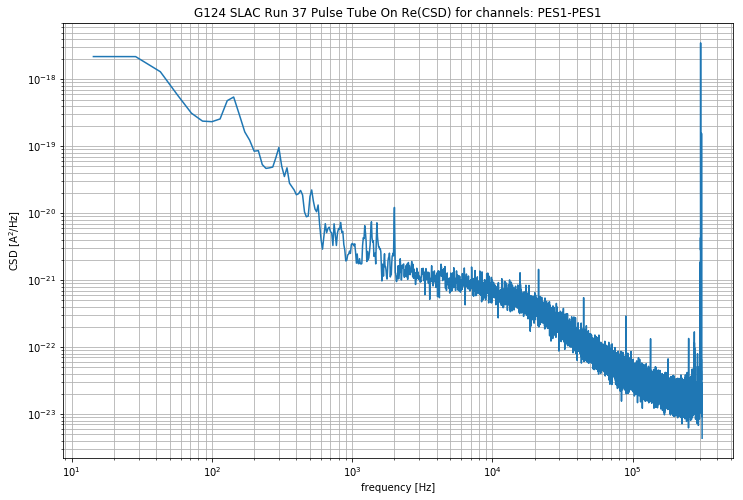

Table of Contents
0.1 Imports
0.2 Load test data
0.3 Create noise object
0.4 Calculate the PSD and corrCoeff
1 Calculate unCorrelated noise
1.1 Test saving
1.2 Test plotting of PSD and corrCoeff
2 Plot a few CSDs
2.1 Try to plot a CSD for a non existant channel
2.2 Try to save a figure with a bad path
3 Plot Real vs Imaginary PSDs
4 Plot unCorrelated part of the noise PSD
5 Create noise simulation object
Noise Analysis Test¶
Imports¶
In [1]:
from qetpy import Noise
from qetpy.sim import TESnoise
from qetpy.plotting import compare_noise, plot_noise_sim
import numpy as np
import matplotlib.pyplot as plt
Load test data¶
In [2]:
pathToTraces = ''
traces_PT_on = np.load(pathToTraces+'traces.npy')
Create noise object¶
In [3]:
#savePath = 'example_Figs/' #used for test, user should define new path for test so they don't save over these figs
savePath = '' #user needs to define new path
sampleRate = 625e3 #define sample rate
channels = [ 'PCS1' , 'PES1' , 'PFS1' , 'PAS2' , 'PBS2' , 'PES2' , 'PDS2' ] #define the channel names
g124_noise = Noise(traces_PT_on, sampleRate, channels) #initialize a noise object
g124_noise.name = 'G124 SLAC Run 37 Pulse Tube On'
Calculate the PSD and corrCoeff¶
In [4]:
g124_noise.calculate_psd()
g124_noise.calculate_corrcoeff()
g124_noise.calculate_csd()
Test saving¶
Uncomment to save and re-load
In [6]:
#saveName = pathToTraces + g124_noise.name.replace(" ", "_") + '.pkl'
#g124_noise.save(pathToTraces)
In [7]:
#del g124_noise
In [8]:
# with open(pathToTraces,'rb') as savefile:
# g124_noise = pickle.load(savefile)
Test plotting of PSD and corrCoeff¶
In [9]:
g124_noise.plot_psd(lgcoverlay=True)

In [10]:
g124_noise.plot_psd(lgcoverlay=False)

In [11]:
g124_noise.plot_corrcoeff(lgcsave=False, lgcsmooth=True, nwindow=13 )


Try to plot a CSD for a non existant channel¶
In [13]:
g124_noise.plot_csd(whichcsd=['68'])
index out of range
Try to save a figure with a bad path¶
In [14]:
g124_noise.plot_csd(whichcsd=['11'], lgcsave=True, savepath = 'yay/python/is/great')
Invalid save path. Figure not saved


Plot unCorrelated part of the noise PSD¶
In [16]:
g124_noise.calculate_uncorr_noise()
In [17]:
g124_noise.plot_decorrelatednoise(lgccorrelated=True,lgcsum = True, lgcsave=False)

In [18]:
g124_noise.plot_decorrelatednoise(lgcoverlay = True)

Create noise simulation object¶
In [19]:
noise_sim = TESnoise(freqs = g124_noise.freqs[1:])
Note, these default noise parameters are completely made up, just for demostration
In [20]:
plot_noise_sim(g124_noise.freqs, g124_noise.psd[0,:], noise_sim, istype='power')
Out[20]:
(<Figure size 864x576 with 1 Axes>,
<matplotlib.axes._subplots.AxesSubplot at 0x7f8e4b5a4908>)

In [ ]: